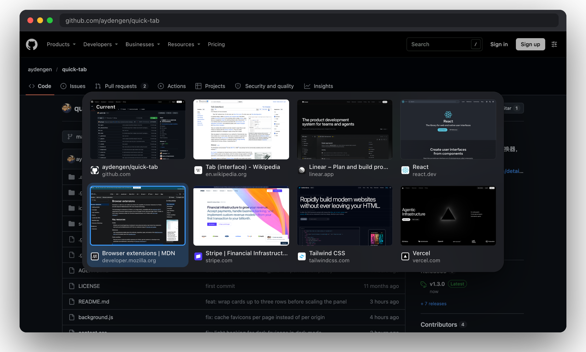

Back to the last page in one tap
Ordered by recent use. Tap Alt+Q to go back one tab.

Ordered by recent use. Tap Alt+Q to go back one tab.
Spot pages by thumbnail, not by truncated titles.
No account, no tracking. Your data stays on your device.
Recent tabs appear as live thumbnails, so you never read a cut-off title again.

Add it from the Chrome Web Store. No sign-in.
Recent tabs appear as cards. Press Q again to move on.
Release to switch, or press Esc to cancel.
Rather not hold Alt? Turn on Sticky mode in settings and confirm with Enter.
First try it on a regular web page such as GitHub. If nothing happens, open
chrome://extensions/shortcuts, find QuickTab, and give it a shortcut that no other extension or system feature is using.
On a Mac, Alt is the Option (⌥) key. If a page that was open before installing does not respond, reload it and try again.
Chrome does not let extensions draw on the New Tab page,chrome:// pages, the Chrome Web Store, or some PDFs. On those pages the shortcut switches straight back to the previous tab.
Tab access is used to show titles and icons and to switch tabs. Site access is used to capture the visible page as a thumbnail. There is no server receiving any of this, and the source code is public.
Recent tabs and thumbnails are kept in local session storage and cleared when you quit Chrome. Your shortcut and settings are kept.
Yes, it is free under the MIT license. QuickTab is built for desktop Chrome on Mac, Windows, and Linux. Other Chromium browsers may work but have not been tested. Mobile browsers cannot install it.